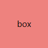

演示
1. 行内块元素(img、a等)之间(水平、垂直)产生的几像素间距问题
1.1 水平方向
box
box
1.2 垂直方向

2. 清除列表每行最右侧项的右边距
2.1 直接增加ul宽度
2.2 使用负边距增加ul宽度
2.3 使用选择器
2.4 设计列表，应用CSS 负边距
2.4.1 使用margin-top，往上偏移
2.4.2 使用margin-bottom，底部往里拉，覆盖自己
3. CSS 负边距
3.1 margin-top / margin-left 偏移
3.1.1 margin-top
box
box
3.1.2 margin-left
box
box
3.2 margin-bottom / margin-right 往里拉
3.2.1 margin-bottom
box
box
3.2.2 margin-right
box
box
3.3 增加宽度
4. 浮动问题
4.1 添加 clear 空元素
4.2 使用CSS的 overflow 属性
4.3 使用CSS的伪对象选择器_1
4.4 使用CSS的伪对象选择器_2
5. CSS 垂直外边距合并问题(兄弟元素之间、父子元素之间)
5.1 父子元素之间
5.1.1 现象：上边距合并，子元素上边距变成了父元素上边距
5.1.1.1 解决：使用:before
5.1.1.2 解决：BFC
5.1.2 现象：下边距合并，子元素下边距变成了父元素下边距
5.1.2.1 解决：使用:before
5.1.2.2 解决：BFC